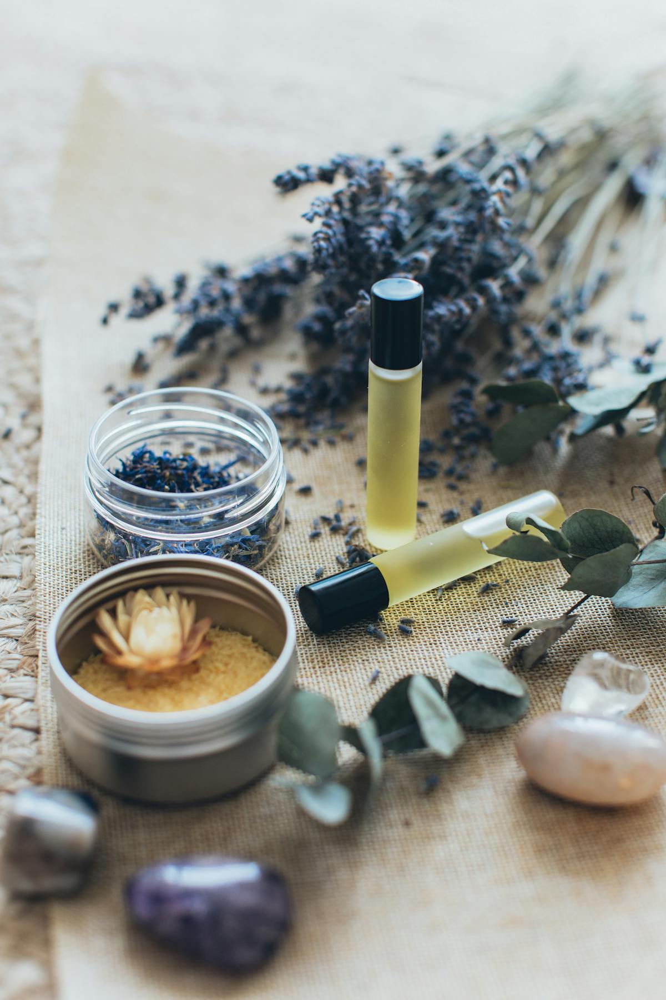

Классический массаж: что это и кому подойдёт
Рассказываю простыми словами, что такое классический массаж, кому он поможет и как проходит сеанс в моём кабинете.…
4 минуты
Массаж при остеохондрозе: правда и мифы
Разбираю, действительно ли массаж помогает при остеохондрозе, когда можно делать, а когда — нельзя, и как найти хорошего…
5 минут
Антицеллюлитный массаж: чего ожидать честно
Честный рассказ об антицеллюлитном массаже: что он реально делает, через сколько виден результат и почему без диеты не о…
5 минут
Расслабляющий массаж при стрессе и усталости
Почему расслабляющий массаж — это не баловство, а реальная помощь нервной системе. Рассказываю про техники и ощущения.…
4 минуты
Баночный массаж: всё, что нужно знать
Объясняю, как работает баночный массаж, почему остаются следы и через сколько они проходят. Плюс — кому противопоказан.…
5 минут
Бамбуковый массаж: зачем нужны палочки
Рассказываю про бамбуковый массаж: как проходит процедура, какие зоны прорабатывает и чем отличается от обычного.…
4 минуты
Массаж воротниковой зоны: быстрая помощь шее и голове
Почему болит голова и шея после работы за компьютером и как массаж воротниковой зоны решает эту проблему.…
4 минуты
Спортивный восстановительный массаж после нагрузок
Помогает ли массаж быстрее восстановиться после спорта? Когда лучше записываться и что ждать от процедуры.…
4 минуты
Массаж при болях в спине: когда поможет
Когда массаж помогает при болях в спине, а когда лучше сначала к врачу. Разбираю разные ситуации.…
5 минут
Подготовка к массажу: что важно знать
Что нужно сделать перед сеансом массажа, чтобы получить максимальный эффект. Рассказываю о питании, гигиене и настрое.…
3 минуты
Профилактический массаж спины: когда и зачем
Нужно ли делать массаж, если спина пока не болит? Рассказываю про профилактические курсы и их пользу.…
4 минуты
Массаж при грыже позвоночника: можно или нет
Честный ответ: когда массаж помогает при грыже, а когда категорически нельзя. Важная информация перед записью.…
5 минут
Массаж при сколиозе: реальная польза
Разбираю, что массаж может сделать при сколиозе, а что — нет. Плюс рекомендации по курсу и частоте.…
4 минуты
Массаж для похудения: работает ли на самом деле
Помогает ли массаж похудеть? Честно разбираю механику, реальные эффекты и что нужно делать параллельно.…
5 минут
Массаж при беременности: безопасные техники
Разрешён ли массаж беременным? Отвечаю подробно: какие техники безопасны, что категорически запрещено и с какого срока.…
5 минут
Массаж ног: польза, противопоказания и техники
Когда помогает массаж ног, а когда противопоказан. Про варикоз, отёки и лимфодренаж простыми словами.…
4 минуты
Массаж головы при головных болях: личный опыт
Массаж головы и шеи при мигрени и головных болях напряжения — что работает, а что нет.…
4 минуты
Детский массаж: когда нужен и что даёт
Зачем детям нужен массаж, с какого возраста, при каких проблемах помогает и как найти хорошего специалиста.…
4 минуты
Массаж для пожилых: мягко, но эффективно
Можно ли делать массаж в пожилом возрасте, какие техники применяю и какие противопоказания учитываю.…
4 минуты
Качественный массаж в Электростали и Павловском Посаде
Где сделать качественный массаж в Электростали и окрестностях. Рассказываю про свои услуги и как записаться.…
3 минуты
Профессиональный массаж рядом с Ногинском
Ищете массаж в Ногинске? Принимаю в Павловском Посаде, это рядом. Расскажу про услуги и как записаться.…
3 минуты
Массаж в Павловском Посаде — кабинет Людмилы
Профессиональный массаж в Павловском Посаде в собственном кабинете. Классический, расслабляющий, антицеллюлитный. Запись…
3 минуты
Цена на массаж: что влияет и на что смотреть
Разбираю, от чего зависит стоимость массажа, чем отличаются дешёвые и дорогие предложения, и сколько реально нужно плати…
4 минуты
Массаж при гипертонии: осторожно, но можно
Гипертония и массаж: когда можно, когда нельзя, и как правильно работать с гипертониками.…
4 минуты
Восстановительный массаж после операции
Реабилитация после операции: когда уместен массаж, какие техники применяются, чего ждать.…
4 минуты
Массаж при болях в суставах
Можно ли делать массаж при артрозе и артрите? Разбираю по видам, рассказываю про эффект.…
4 минуты
Результат от массажа: реальные сроки
Честно отвечаю: когда ждать результата от массажа, почему после первого сеанса бывает хуже и что нормально.…
4 минуты
Массаж для офисных сотрудников: необходимость, не роскошь
Офисная работа убивает спину и шею. Рассказываю, как массаж помогает и что важно учесть людям с сидячей работой.…
4 минутыМассаж при хронической усталости
Хроническая усталость — не лень и не депрессия. Массаж как инструмент восстановления.…
4 минуты
Противопоказания к массажу: важная информация
Полный список противопоказаний к массажу: абсолютных и относительных. Когда нельзя ни в коем случае, а когда можно с ост…
4 минуты
Как выбрать массажиста: честные советы
Советы по выбору массажиста: образование, опыт, кабинет, первый сеанс. Как не попасть к дилетанту.…
5 минут
Послеродовой массаж: восстановление после родов
Восстановление после родов с помощью массажа: сроки, техники, польза для спины и живота.…
4 минуты
Массаж в любое время года
Когда лучше записываться на массаж — зимой или летом? Сезонные особенности и как они влияют на сеансы.…
3 минуты